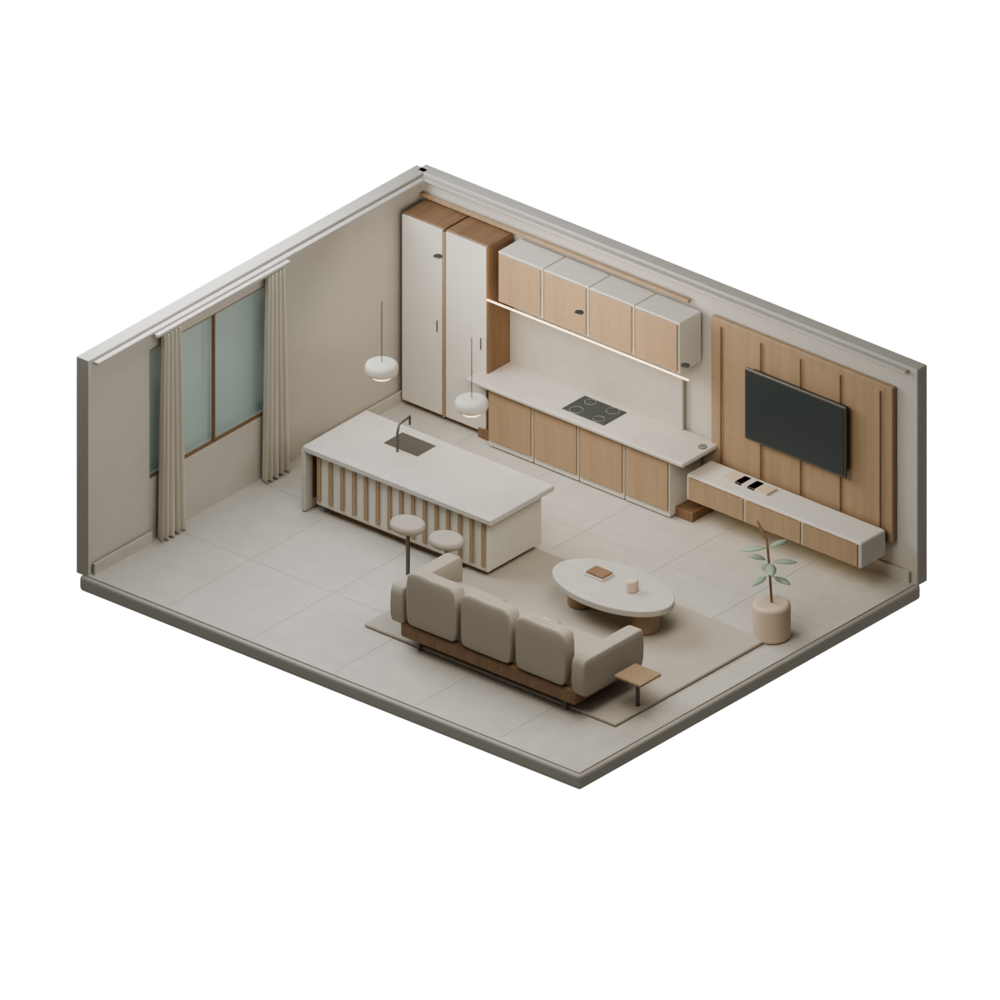

WIN JOINERY / SELECTED INTERIORS
Spaces, collected.
A quiet look at interiors, material and detail.
Drag the cover to open
COVER
Preparing your space0%
Unable to load the interior

A quiet look at interiors, material and detail.
Drag the cover to open